地点相关：
西北区：颐和园、圆明园、清华大学、北京大学、五道口（火炉火）、食宝街、新中关购物中心、欧美汇、北京外国语大学、奥体公园
中部区：
恭王府、后海、南锣鼓巷（张妈妈）、东郊民巷、景山公园、四季民福、西单
雍和宫、五道营胡同、地坛、三里屯（北21号、火烧云）
东北区：
红砖厂、将府公园、机场
食宝街、四季民福、火烧云、火炉火、张妈妈、北21号
（备选方案：墨西哥餐厅、回转寿司、高兴火锅）
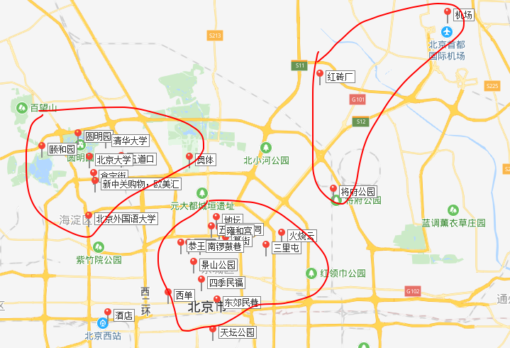
根据目前的天气预报，天气主要是多云而且带有小雨，建议两件套，多穿点没有关系。（伞是不是可以带一下？）
两个天气预报都是3号那天点雨，雍和宫烧香定为4号。
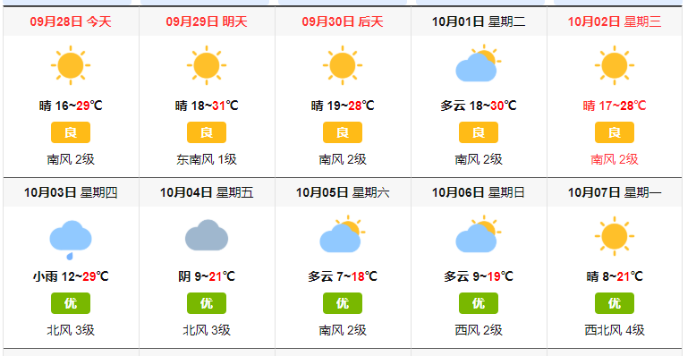
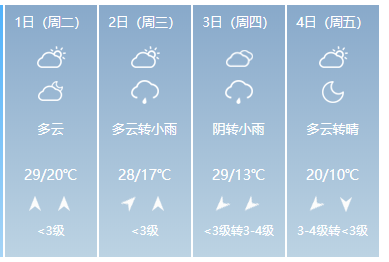
景点主要集中在西北、中部、东北三个区。西北一天时间，中部景点较为密集分为两天时间，东北为最后一天上午游玩。
注意：
| -时间 | -旅程路线 |
|---|---|
| 十月一号 | 晚12点到 |
| 十月二号 | 北京外国语大学->颐和园->五道口（火炉火）->（圆明园、清、北？）->新中关购物，欧美汇（食宝街）->奥体公园 |
| 十月三号 | 恭王府->后海->南锣鼓巷(张妈妈川菜)->东郊民巷->景山公园->四季民福->西单 |
| 十月四号 | 雍和宫->五道营胡同->地坛->三里屯(北21号)[工体、德云社]->火烧云 |
| 十月五号 | 将府公园（奥体公园）->红砖厂->18:30机场飞机 |
酒店->北京外国语->颐和园->五道口（火炉火）->(清北政航？)->新中关，欧美汇->食宝街->奥体公园
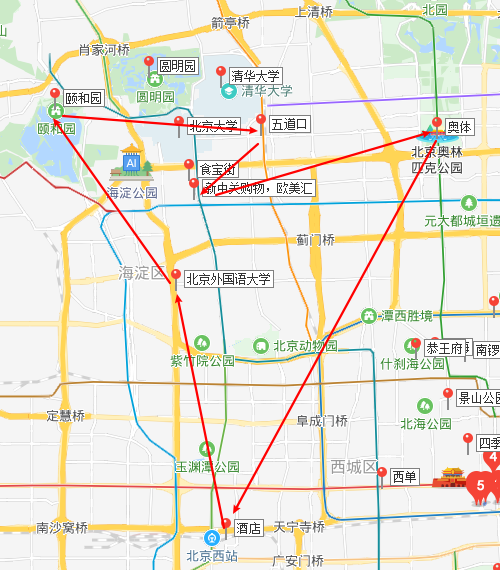
酒店->北京外国语大学（公交车程：48分钟， 打车约30元）
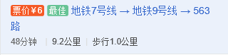
景点：图书馆，转悠半个小时左右
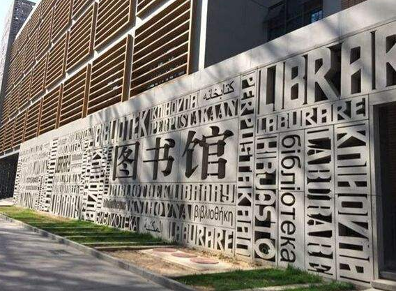
北京外国语->颐和园（公交车程：36分钟，打车约26元）
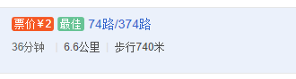
景点：剩下的上午都在这里
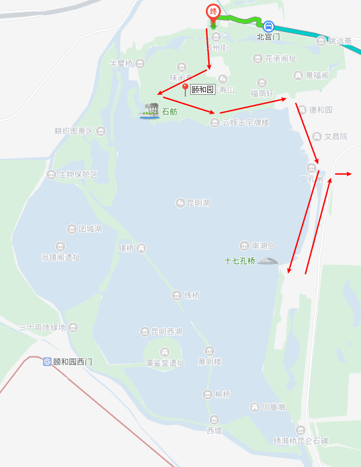
颐和园->五道口（火炉火）（公交车程：34分钟，打车约22元）
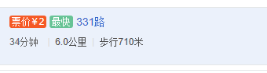
景点：火炉火韩式餐厅，大约吃一个多小时。排队？
清北政航？可以在五道口附近的大学里面玩，还是有挺多好看的景色可以拍摄的。体会不同学校不一样的特色。推荐北语和北科，都在五道口附近，吃完走走，可以消化一下。两个小时-三个小时
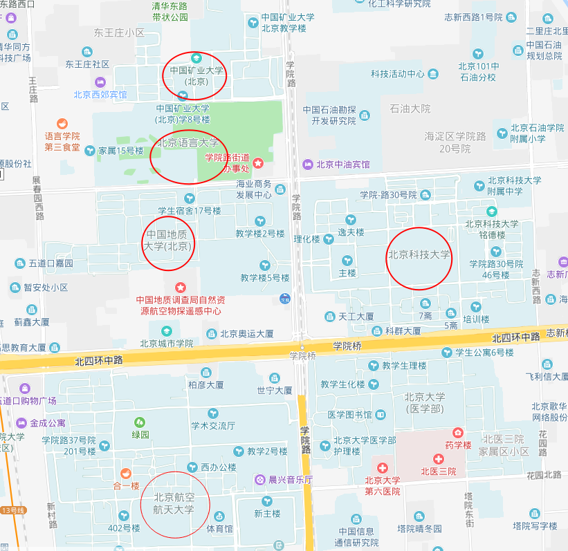
五道口->新中关购物中心、欧美汇、食宝街(公交车程：29分钟， 打车约16元)
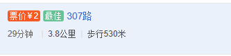
景点：新中关购物中心和欧美汇购物中心，两大购物中心连在一起，旁边还有食宝街小吃城。也可以去一公里外人大看风景。一直玩到晚上
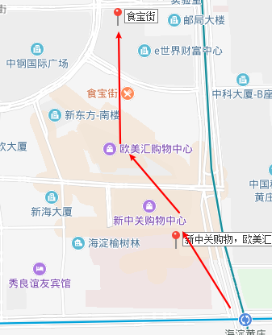
食宝街->奥体（公交车程：37分钟 打车约27元）
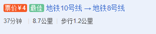
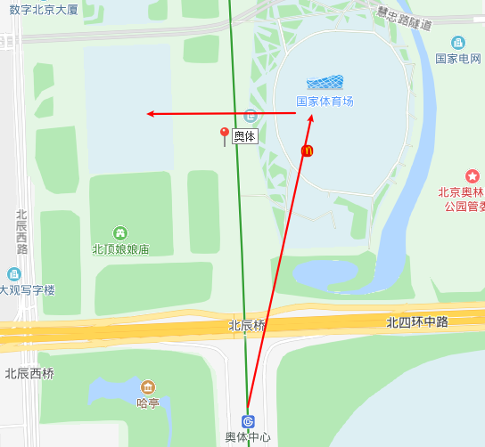
景点：水立方、鸟巢
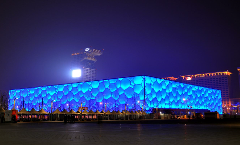
酒店->恭王府->后海->南锣鼓巷(张妈妈)->东郊民巷->景山公园(日落)->四季民福（提前预约）->西单
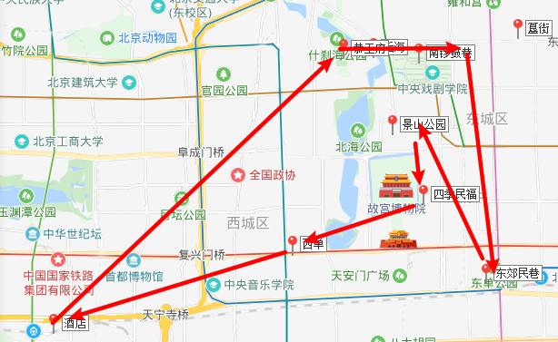
酒店->恭王府（公交车程：43分钟，打车约30元）
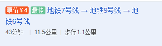
恭王府->后海->南锣鼓巷->张妈妈。总长是1.8公里。徒步前进
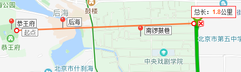
恭王府是和珅的府衙，可以转一转。2小时
然后去后海，后海酒吧一条街，1.5小时
南锣鼓巷，是小吃一条街。2.5小时（午饭张妈妈）
南锣鼓巷->东郊民巷（公交车程：32分钟 打车约20元）1.5小时
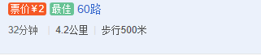
东郊民巷->景山公园（打车约17元，建议打车）1.5小时
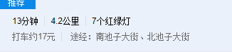
景山公园->四季民福（步行）20分钟
景点：2小时
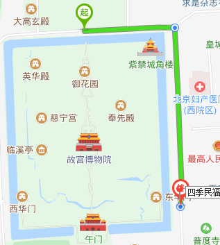
四季民福->西单（公交：25分钟 打车约15元）
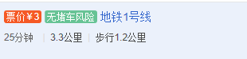
酒店->雍和宫->五道营->三里屯(北27号)->火烧云
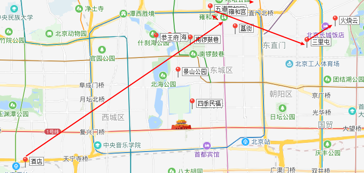
酒店->雍和宫（地铁48分钟，打车40，建议地铁）2小时
雍和宫->五道营1小时
五道营->地坛1小时
地坛->三里屯后面基本都在三里屯，如果时间充裕再考虑
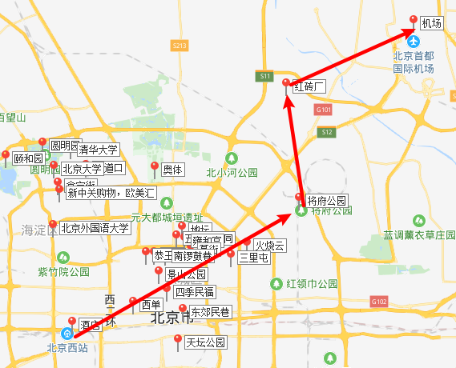
后面再具体